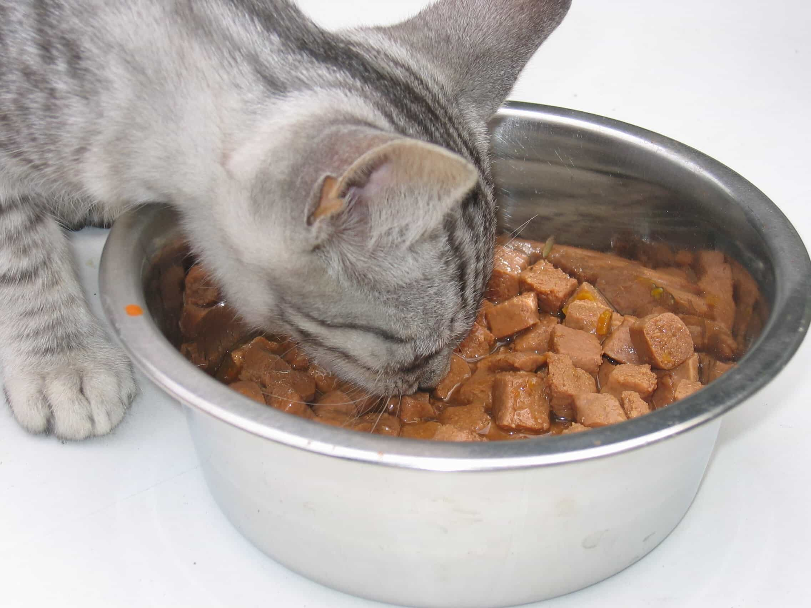
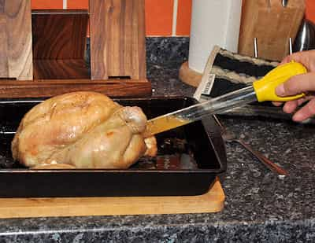

< < < Back
5 Ways To Profit Bigly From Miserable, Childless, And Career-Obsessed Feminists – Return Of Kings
The feminist-oriented economy is booming and companies to invest in abound. Why not take advantage of it? If you don’t, someone else will. And when the inevitable stock price increases and dividends come rolling in, you’ll be laughing to the bank at the feminists whose money you have legally taken.
So here are five key ways to capitalize on a couple generations of miserable, childless and career-obsessed feminists:
1. Cat and other pet food companies

The man she went on the date with isn’t good enough (or doesn’t earn enough). She doesn’t like having housemates, either, as they ruin her feng shui plans. So cats and other pets, particularly small dogs amenable to human-like hair-styling, are the go-to mammals for domestic companionship for many a feminist. And, believe it or not, these creatures need food.
When looking for the right cat and other pet food company to invest in, make sure you find a business concern that values what cats owned by feminists value: fair trade status and a commitment to saving the very endangered Mexican Staring Frog of Southern Sri Lanka. It goes without saying that the company should produce products capable of being endorsed by Bono, Lady Gaga, Lena Dunham, or, at worst, Rachel Maddow.
2. Pet clothing and lifestyle businesses
Yes, this needs its own category, set apart from pet food. Whereas women of the 1980s, 1990s and even 2000s focused on clothing and throwing birthday parties for their children, feminist women of the mid-2010s are treating their animals as their actual children. Few investors are yet to realize the unbridled opportunities that this shift will bring.
Things like chihuahua-friendly handbags and environmentally sustainable cat-suits are far from dead crazes. That said, the time to start your dive into this amazing world is now. Could you ever forgive yourself if you were never a part of the vegetarian, gluten-free pet cake phenomenon? Western society doesn’t need replacement level fertility rates when feminists can pamper their kitty or pooch while the apocalypse goes down.
3. Sperm banks and in-vitro fertilization clinics

Every man-hater with a womb needs a cold turkey-blaster capable of matching her cold approach to male-female relationships. And with no better husband or father than the welfare state, plenty of empowered women are opting to raise a child on their own so they can smother them with their feminist abuse. But you have to always be ahead of the competition in your investment choices in this area, budding Warren Buffetts.
Rather than looking to the bland, sterile sperm clinic, choose a place where the staff remind the clients that it’s not their fault that they didn’t get a Brad Pitt or Ryan Gosling. In fact, even those men are not worthy of their curves, feisty demeanor, and borderline personality disorder. More so than any other business in human history, at a sperm clinic the customer is always right, including about the circumstances that brought her there.
4. Wellness and “find your inner child” retreat facilities
Where does a feminist go when is unfairly reprimanded for not doing her job properly and wants to make use of the “criticism leave” she is entitled to before the sex discrimination lawsuit? We all know the answer: Mount Susan B. Anthony Retreat for the Oppressed and Undervalued Woman Looking to Find Herself Center (or its sister location, Lady Gaga’s Center for Decidedly Demure and Classy Women). The world is harsh and what better way for a girl to insulate herself from it than with a $500-a-night luxury cocoon or safe space with gluten-free meals?
A related investment opportunity are spirituality retreats. You know something is wrong when women haven’t yet found fulfillment in the latest iPhone release or the newest array of Instagram filters! What these state of the art facilities will teach women is that the world is meant to appreciate them. When that doesn’t happen, it’s time to come back to the retreat center again.
5. Online dating websites
This is the secret gold-maker. Despite their seeming ubiquity in modern society, online dating websites are grossly under-appreciated by your average investor. Because almost no man ever ticks the feminist female’s boxes for long enough, she’s always having to look for a new guy to fill her box on the internet, whether for a “normal” relationship or to cheat. And this means more monthly subscriptions for online dating. Recent studies by Return Of Kings and men everywhere suggest that feminist women grow sick of the man in their life as many times as their mood changes.
In choosing your portfolio of online dating websites to buy into, make sure that all the pages associated with them do not make use of the color pink, which is an invention of the patriarchy designed to oppress a woman’s uterus between 11pm and 9:30am the next morning (and then intermittently for all remaining hours of the day). Also, check that the terms and conditions of the website require a man to have sex with any fat girl or transgender person who contacts him. This is the sort of social awareness that puts online feminist daters at ease and will lead to long-term investment profits.
Think this is satire? Think again
Don’t confuse the tongue-in-cheek tone of this article with a presentation of fantasy. All these business areas are booming. In America and Australia, for example, animal grooming and related services are among the fastest-growing industries of all, the majority of pet-styling customers being women. Similar insights can be made about the other categories explored here.
Sadly, time and money that a woman used to spend to make herself marriageable and motherly are now devoted to hamfistedly plugging the personal hole that feminism has created for her. Whilst Return Of Kings encourages women to be healthy and enjoy things such as the companionship of animals, they are dangerously over-compensating in many of these life choices.
Feminism taught many women to consciously hate raising children full-time, needing to find a man, and keeping their bodies attractive. Yet now these same women are often raising and pampering pets full-time, looking for (too many) men online, and trying to keep themselves healthy through over-priced, ineffective wellness and lifestyle purchases.
If anything, the feminist economy sees women acting out their deep-seated desires in unfulfilling and/or personally destructive ways. You may as well profit from these choices when you can.
Read More: International No Diet Day Shows The Miserable Depths Feminists Go To Stay Morbidly Obese